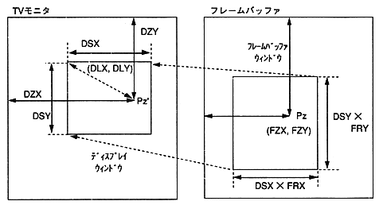

The MPEG window control interface can realize the following visual effects with few parameters. The parameters to be operated when executing visual effects are shown below.
Table 5.1 Visual effects and control parameters
Visual effects | Parameters to control | Effects |
|---|---|---|
Zoom | FRX, FRY | Fix the display window |
Scroll | FZX, FZY | Move left and right |
move | DZX, DZY | Zoom point unchanged Move the display reference position to. |
Peeping | DLX, DLY | Video display relative position While changing the |
wipe | DLX, DLY, DSX, DSY | Video The magnification of the |
Expand | DLX, DLY, DSX, DSY | The size of the display window |